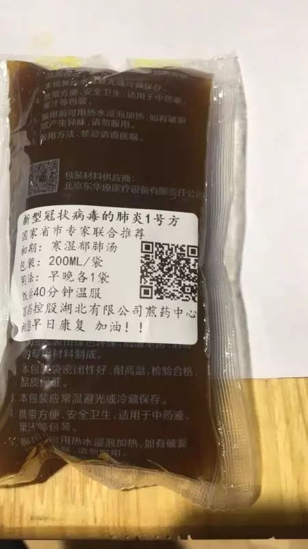
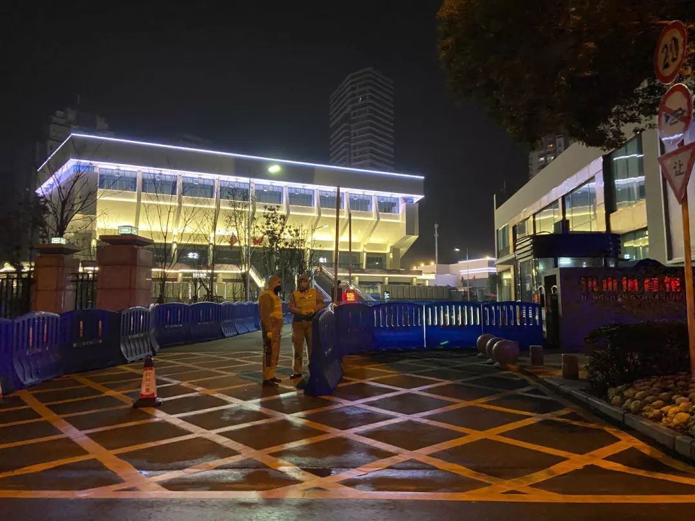

金银潭副院长黄朝林病愈隔离，自述被传染和当“试药人”内情
原文链接 备份链接 不管是专家院士还是临床医生，对一个疾病的认知都有个过程 黄朝林。 图/中新网 1月19日凌晨，武汉市卫健委举行新闻发布会，针对武汉市新型冠状病毒感染的肺炎综合防控答记者问。当时，湖北省医疗组专家、武汉市金银潭医院副院 …
澎湃新闻记者 赵思维 发自武汉
实习生 沈佳昕
最近的20多天，何伟（化名）的心情犹如过山车般起落。
从确诊住不进医院的焦虑，到住进方舱医院治愈后的激动，“做一个健康人”，和家人平平安安过日子，成为他这段时间以来想得最多的心愿。
他开始怀念以前武汉街上车水马龙的热闹劲，他在这里待了超过20年。
何伟感染新冠肺炎后，症状不是很重。2月13日，经过常规的中西医药物治疗，他的核酸检测“阳转阴”，顺利出舱，家人目前也未受到他的影响。


何伟在方舱医院内吃的药物 受访者供图
分享自己从方舱医院出舱的康复之路时，何伟觉得自己的心态一直都很好，除了配合养疗，他还参加了由病友组织成立的党支部，帮助病友收集反映问题、给医护帮忙搬东西、替保洁拖地。
在接受澎湃新闻（www.thepaper.cn）采访时，何伟给记者提供了几段在武昌方舱医院病友群里的视频。视频中，病友们齐声歌唱，打着拍子，用欢快的歌声相互鼓励，医护人员在清理床铺时还不忘给病人鼓掌加油打气。
何伟认为，在这种重大公共卫生事件面前，个体无疑是渺小的，“但是为了家人，我们要抚平伤口，坚强地活着”。
以下为何伟口述：
从天佑医院转入方舱医院
这20多天的经历，我今后很长一段时间都会想起。
我叫何伟（化名），湖北人，今年50岁，在武汉工作生活超过20年。1月20日前后，我感觉到喉咙不舒服，去了一家省直医院门诊几次。当时我以为只是普通感冒，医生给我看了喉咙。还记得看病时，围了一圈的病人，大家都没有戴口罩，事后我在想很可能就是那个时候感染的病毒。
22日，我回了趟老家，和家人一起吃年饭，当时还不知道已经感染上新冠病毒，好在我始终戴着口罩，降低了风险。吃完年饭，我心里总是不踏实，便在25日去医院做了CT，发现双肺感染，27日核酸检测结果是阳性。
确诊之后各大医院我都住不进去，有的医院排10个小时队都轮不到号。我就到武汉市第七医院看了门诊，医生给我开了点感冒药。
担心传染给家人，我就搬出去一个人住，开始了自我隔离的日子。
直到2月5日，水果湖社区工作人员告诉我，说天佑医院有空床位，问我去不去，我当即答应。当天下午5点半左右，我到天佑医院办理了入院手续，还没有开始具体治疗，凌晨1点，医院通知说，政府要求将确诊的轻症病人集中转运到洪山体育馆改造的方舱医院。
方舱医院我只是在网上看到过一些介绍，但里面的情况不是很清楚，最后我还是来了。

洪山体育馆改造的武昌方舱医院。澎湃新闻记者 赵思维 图
想开点，一切逐渐走上正轨
我知道，武汉的确诊人数是全国最多的，还有确诊和疑似确诊的病人住不进医院，这个时候需要医院腾出位置给危重症病人，所以像我这样症状比较轻的人就要集中到方舱医院。
2月6日凌晨3点半，我住进了武昌方舱医院，开始在这里接受诊疗。
住进的那天凌晨下着大雨，各个社区转运过来的病人冒雨在洪山体育馆外的露天场地排队。大家先要在场馆外的隔离帐篷里登记，再看被分到哪个区。
入住的6日凌晨病床没有通电，只能提供照明，晚上睡觉冷。白天饭和药没有按时提供，晚上10点半开始给病人发药。好在6日晚上电力恢复正常，药物也开始按时配发，逐渐步入正轨。
在方舱医院，厕所在室外，需要走两三百米，有些不方便。医院也没有给病人洗澡的地方，不过也没办法，我想着总比没地方看病好吧。
其实我能理解，从启用方舱医院到病人入住，只有短短一天时间，医护和服务设施上难免会跟不上。方舱医院病人很多，医生护士太忙，像我待的病区有253个病床，一个医生要查一百多个病人的床，等查完基本就要交班。
到方舱医院以后，我没有生气抱怨，还开导身边的病友，让他们想开一点，在这里不需要你挂号排队，有人定期给你复查，比在外面看不了病的病人好很多。后来大部分病友的情绪都很稳定，接受了方舱医院的环境，一切逐渐走上正轨。
其实，在医院电话通知我核酸检测结果的时候，我没什么感觉，既不害怕也不恐慌。从确诊到入住方舱医院，我的心态一直比较好，觉得这个病可以治愈。
成立临时党支部，收集反映问题
在方舱医院，每天早上7点亮灯，病人陆续起来，有的人想睡就继续睡。早上8点到8点半吃早餐，12点半到下午1点吃中饭，下午5点半到6点吃晚饭。晚上11点左右熄灯睡觉。
有个不好的事情是，晚上会有患者陆续转运进来，护士还要工作，医院内不会很安静，比较嘈杂，好在医护给每个病人发了眼罩和耳塞。
每天的诊疗，医生给我开的药有盐酸阿比多尔片、盐酸莫西沙星片、磷酸奥司他韦胶囊、莲花清瘟胶囊和复方甲氧那明胶囊，以及袋装的中药肺炎1号方“寒湿郁肺汤”，每袋是200ml。护士会一次发给病人几天的药，吃完了再找他们要。有时候护士会提醒你吃药，但是病人太多了忙不过来，我们病友间就要互相提醒。
11日，方舱内成立了临时党支部，设立了总支委员会，由身体比较好、症状比较轻的病人扮演组织者角色。我身体比较好，可以帮忙做做事，便担任了总支委员。

方舱医院内成立的病友党支部 受访者供图
临时党支部成立后，会收集病人的需求，然后归纳向上面反馈，这样问题容易得到解决，病人的情绪也可以得到安抚。比如大家普遍反映的不能洗澡问题，院方就连夜施工，安装了两个集装箱供给病人洗澡。
此外，医护人员穿着厚厚的防护服，拿东西很不方便，在符合医疗条件下，我们会组织一些病友帮他们搬搬东西。保洁队的人也很辛苦，他们人手不够，我们就帮忙把地拖一下。
很怕问到别人伤心事
方舱里住的都是确诊的轻症患者，病人之间的症状基本都一样，但是病友间交流比较少，大部分时间大家都低着头，戴着口罩静静地坐在床边。记得有位病友一家人都感染了病毒，很害怕问到别人的伤心事。

方舱医院内病人在休息 受访者供图
我自己身体的感觉我是知道的，有一个直觉，我的病不用吃药都可以好，比感冒都容易治，可能就是比较“心大”吧。唯一担心我的家人会被我感染，不过家人隔离之后也没有出现症状，我就放心了。
相比其他病友，我无疑是幸运的。
11日、12日，方舱医院的医护分别给我做了两次核酸检测，结果都为阴性。13日，通知我可以出院，我内心很激动，谁都想做个健康人。
在确诊隔离、方舱治疗的这段时间，我很怀念以前和家人过着的普通日子，很怀念街上车水马龙的热闹劲，很怀念生机勃勃的武汉城，以前讨厌的堵车也觉得挺好。
康复出舱后，我会好好洗个澡。很担心我的母亲和岳母，看到她们没事我心里的石头就落地了。但是出舱后我还要隔离14天，你不隔离别人可能会怪你。
医生说我们对这个病毒已经有抗体，不会再感染病毒，但是刚治愈身体的抵抗力比较弱，容易感染其他的流行病，所以还是要做好隔离。
我一直很注重身体健康，很少抽烟喝酒，一周坚持锻炼4次，坚持步行上下班。疫情过后，我们还是要掌握健康常识，管理好自己的身体，对这种流行病具备基本的卫生常识，对自己负责，也是对家庭负责。
谢谢那些驰援武汉的医护人员，疫情快点消散吧！
戳这里进入
“全国新型冠状病毒感染病例实时地图”↓↓↓

本期编辑 常琛
推荐阅读


原文链接 备份链接 不管是专家院士还是临床医生，对一个疾病的认知都有个过程 黄朝林。 图/中新网 1月19日凌晨，武汉市卫健委举行新闻发布会，针对武汉市新型冠状病毒感染的肺炎综合防控答记者问。当时，湖北省医疗组专家、武汉市金银潭医院副院 …
原文链接 备份链接 武汉紧急改造启用的多个临时性“方舱医院”，承担了此次疫情中数量最大的隔离任务。虽然时间紧任务重，方舱医院的内部运行已经从最初的忙乱走向有序 文 | 《财经》记者 刘以秦 编辑 | 谢丽容 2月6日凌晨3点，在武汉一家 …
原文链接 备份链接 【财新网】（记者 周泰来 实习记者 黄晏浩 陈丽金）湖北省鄂州市由于新冠疫情防控压力大，已公开呼吁全市退休、离职医护人员和个体医务工作者积极参与疫情防控工作。据鄂州市政府官网，鄂州市新型冠状病毒感染的肺炎防控指挥部 …
原文链接 备份链接 杨晨还在等通知。他在等待“十号令”带给他以及他的家庭命运的转机，他是一位“武汉病人”的家属。 让他有所期许的“十号令”，是2月2日发出的。按照“十号令”的要求，自通告发布之日起，对全市经发热门诊诊断有肺炎症状的发热病人 …
原文链接 备份链接 2月1日，西藏自治区第三人民医院医生土旦朗杰观看病人胸片。目前，西藏唯一一例确诊的新型冠状病毒感染的肺炎患者在此住院治疗。觉果/摄 新华社CNML图片 作者 杨海 编辑 从玉华 李亮是武汉某三甲医院的病房主任，从1月 …